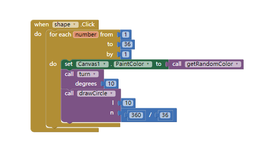
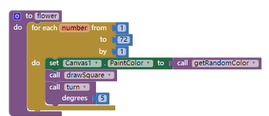

1)Include a screenshot of an interesting design that your Logo app made AND a screenshot of the code that created it.


2)Describe in your own words, with a specific example from Logo, how our choice of abstractions (commands) in this lesson provides us with the ability to solve problems that couldn't be solved with the abstractions (commands) used in Logo Part 1.
The turn degrees procedure provides us with the ability to solve problems that couldn't be solved with the abstractions (commands) used in Logo Part 1.Because it can control the angles you are gonig to turn,not just 90 degrees,so it go different direction and make a lot of shape.